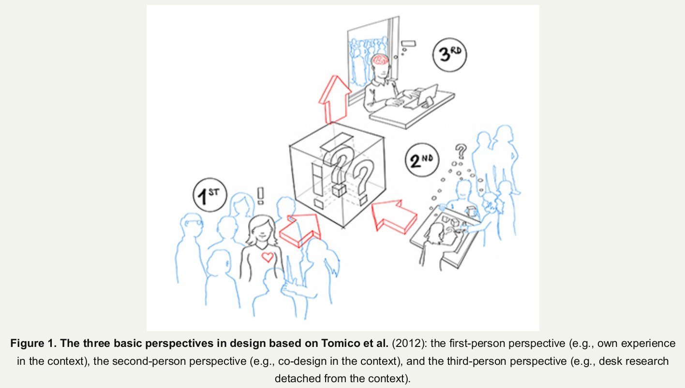
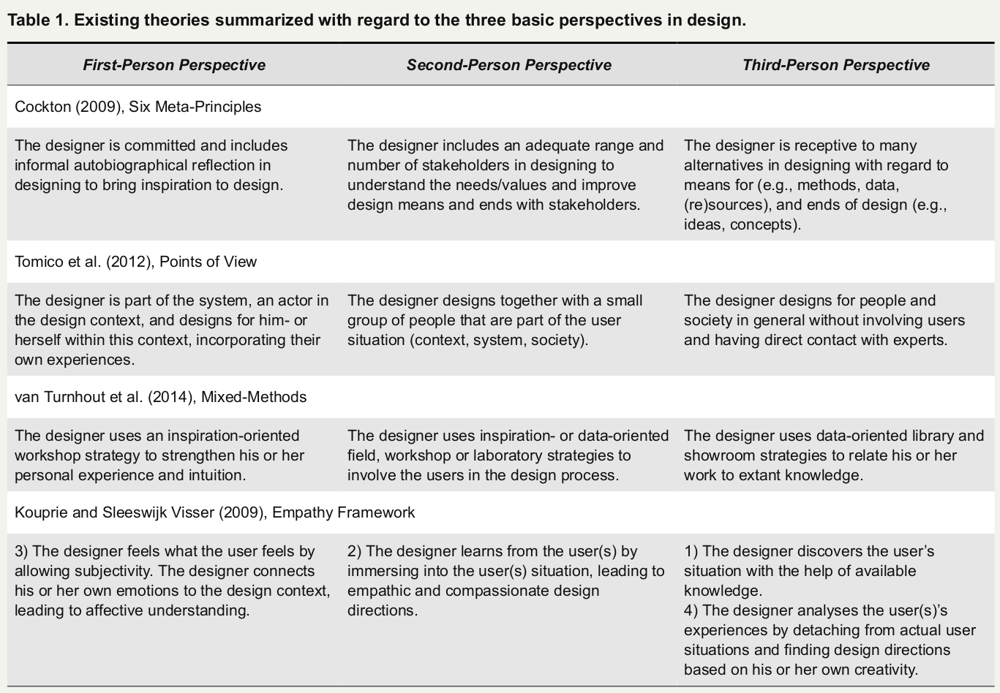

The authors (van Turnhout et al., 2014) use the Development Oriented
Triangulation (DOT-)framework to classify methods, distinguishing between five broad design strategies:
‘field’
(for studies aimed at getting an overview of the context of use),
‘lab’ (aimed at testing aspects of the solution
with regard to (simulated) aspects of the context of use), ‘workshop’ (aimed at exploring the solution space),
‘library’ (aimed at getting an overview of existing work), and
‘showroom’ (aimed at testing aspects of the
solution in relation to existing work).
With receptiveness, Cockton (2009) originally referred to designers keeping an open mind to many alternatives (e.g., ideas and inspiration) and (re)sources (e.g., data). He argued that alternatives must be well expressed and that designers need to be open to many more sources of inspiration, including informal autobiographical reflection. With inclusiveness, Cockton referred to the care taken to make the design outcome fit for and inclusive of a wide range of stakeholders. He argued for also including ethical (communities of kind) and/or moral (general public) considerations. According to Cockton, committedness means that design outcomes result from explicit choices that design teams consciously commit to in good faith. This entails more of a virtuous feeling and demeanor/attitude than rationality. The principle of expressivity refers to the importance of externalizing design elements (e.g., visualization, personas, role play) and the grounds for design decisions. Credibility concerns the quality of options and compatibility of choices. Cockton argued that means, ends, stakeholders, and evaluation must be coherently and productively related to each other. It is the context of a choice that makes it credible. Finally, improvability is about aligning design purpose and evaluation purpose. Improvability therefore extends beyond evaluability to understanding and having a responsive attitude (i.e., the ability and will to fix problems).
They (Tomico et al., 2012) briefly defined the third-person perspective as “designing for people and society in general.” This means that the designer is an expert and takes an objective view and designs for people without involving users and professional experts, non-situated. They defined the second-person perspective as “designing together with a group of people that are part of society.” This means that the designer is socially involved and facilitates co-design sessions with users and professional experts who are part of the user situation. They briefly defined the first-person perspective as “designing for oneself within society.” This means that designers are personally involved since they are part of and actors in the designed-for system. Designers design for themselves within the context and involve their own experiences.
Kouprie and Sleeswijk Visser’s (2009) prescriptive design framework on empathic design can be seen as a sequence through perspectives. Their empathic design framework presented gaining empathy with users in design as a chronological process of four phases: discovery, immersion, connection, and detachment. They related the discovery phase to the research and analysis a designer undertakes to get familiar with the user. This refers to applying a third-person perspective. In addition, they mentioned the designer making first contact with the user, which we see as a step into the second-person perspective. The immersion phase is dedicated to understanding the situation at stake and the people involved by working with them in context, referring to a second-person perspective. As soon as the empathic designer moves on and really connects to the situation and relates it to their own experiences and feelings, a first-person perspective comes in. When the designer then deliberately takes a distance and detaches from the situation at stake to analyze the outcomes of the discovery, immersion, and connection phases, (s)he once again takes a third-person perspective.
For designers, employing this perspective means being receptive: they think about many alternatives with regard to means and ends in designing for the user. Based on third-party means (available knowledge and sources), the designer is able to set up a (future) hypothesis to imagine and develop new ends (e.g., vision, design directions, ideas, criteria, concepts, prototypes) and to construct theoretical framing.
For designers, employing this perspective means being inclusive: they co-design with an adequate range and number of stakeholders. This collaboration with stakeholders (professional experts and users) allows the designer to be inspired, to build an empathic understanding, and to construct an empirical framing of the user situation and the stakeholders’ (current and past) values within it.
For designers, employing this perspective means being committed: they are part of and within the design context and include informal autobiographical reflection. Based on his or her own (current and past) experiences within this context, the designer takes responsibility, finds intrinsic motivation, uses intuition, and constructs an intuitive framing.